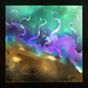
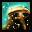
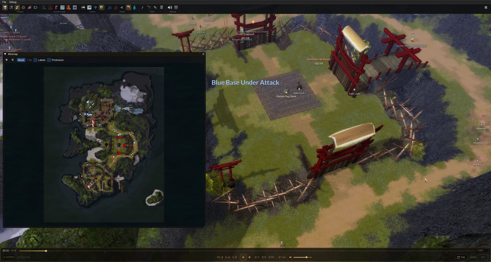
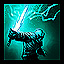
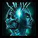

Release notes
Update 3.5.1 is a patch release. It brings a camera that behaves like the in-game camera, map effects on the Isle of Meditation and the Isle of the Weeping Stone, better health and energy estimates, and a set of rendering fixes.
Reworked camera control and transparency to behave as in game when the camera is focused on a player: it is no longer possible to pan vertically into the ground, and transparency is applied to props in the way so the character stays visible.
Free camera still allows you to move freely around the map and terrain.

Added Miasma texture on Isle of Meditation.
Added Stone Spores texture and effect on Isle of the Weeping Stone.Added a gate closed/open indicator on Isle of Meditation (same as existing ones, e.g. Frozen Isle).


Added Vital Weapon to the maximum health estimate (its bonus was read as extra armour before).
Added Spirit Siphon energy gain: recorded amount when available, otherwise estimated from the nearest spirit (explained in the energy lamp tooltip).Merged PR #6 and #7, thanks to Arkalon!